Business Automation Workflow Installation and Configuration
2. Business Automation Workflow Installation and Configuration
2.1 Validate the Deployment Environment (DE) Topology and Pattern
A network deployment environment can have many topologies.
DE Function
From function perspective, we have two types.
- Workflow Center / Process Center: usually used as development environment. Developers can use Process Designer (either Eclipse based or Web based) to develop the process applications
- Workflow Server / Process Server: usually used as UAT and Production environment. No Process Designer available.
They are for different purpose. It's not prohibited to use Workflow Center as production envrionment, but it's not recommended.
Health Check usually focus on Workflow Server (Production environment).
Features
From feature perspective, we have three types.
- Standard: only BPMN features are enabled.
- Advanced: both BPMN and BPEL features are enabled. It's possible that customer only use one feature.
- Advanced only: only BPEL features are enabled.
The health check list will be different for BPMN and BPEL.
Patterns
We also have two patterns.
- Single Cluster
- Application, Remote Messaging and Remote Support (aka Golden Cluster or Golden Topology)
Old version of Business Process Manager may have other clusters like Remote Web.
Check the DE
From WAS admin console, navigate to Servers - Deployment Environments, check the DE features and patterns.
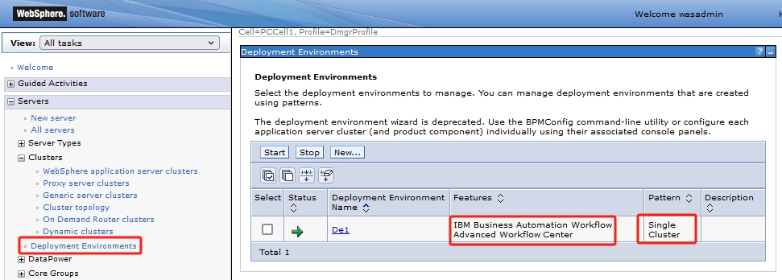
Click the DE name, you will see the DE cluster status.
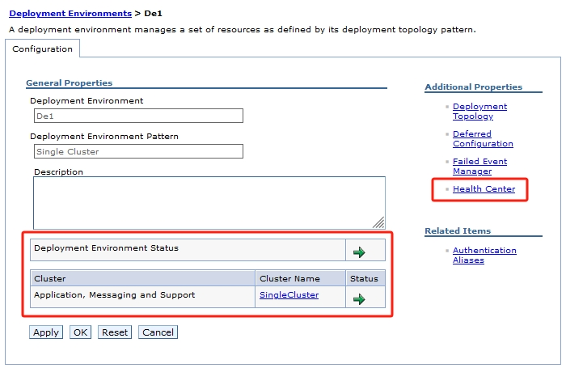
On the right side under Additional Properties click Health Center. It will show the health status for all the components.
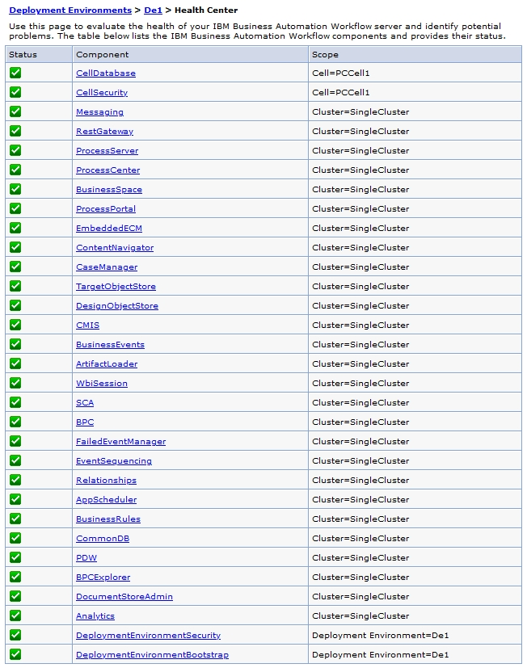
Check the Topology
From WAS admin console, navigate to Servers - Clusters - Cluster topology, the cluster topology will be shown on the right side.
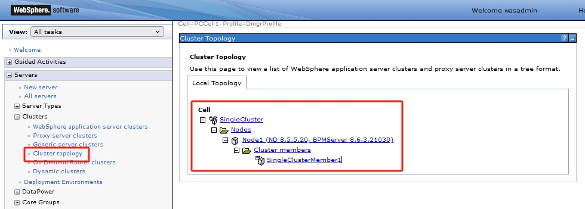
Here we can know: - How many nodes in the cell - How many clusters in the cell - Which nodes are the cluster members running on. For example, the cell has 6 nodes but Messaging cluster only running on 2 nodes.
Recommendations
- Use
Workflow Centeras Production environment is not recommended.Workflow Centeris optimized for development. For more information, please refer to Choosing the deployment environment type. Single Clustertopology is not recommended for Production.
2.2 Verify Java Virtual Machine (JVM) Settings
The product is written in Java, the performance of the JVM has a significant impact on the performance delivered by these products. JVMs externalize multiple tuning parameters that might be used to improve both authoring and runtime performance. The most important of these parameters are related to garbage collection and setting the Java heap size.
In a Cell, there are three types of Java process.
Deployment Manager (DMGR)
On WAS admin console, navigate to System administration - Deployment Manager, on the right side under Server Infrastructure, expand Java and Process Management, click Process Definition.
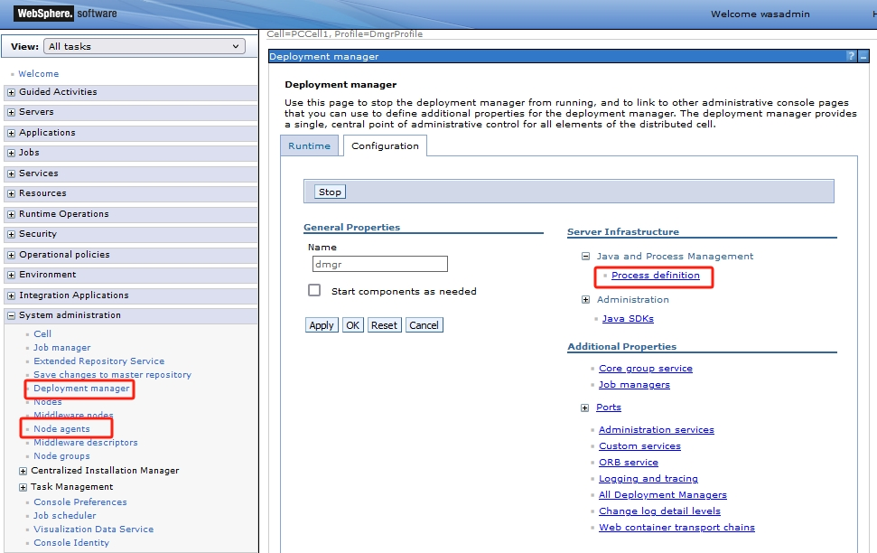
Then on the right side under Additional Properties click Java Virtual Machine.
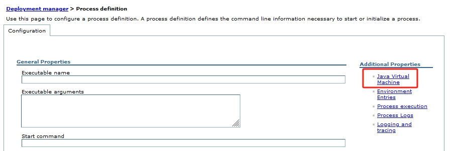
Check the Initial heap size and Maximum heap size. Also check if Verbose garbage collection is enabled.
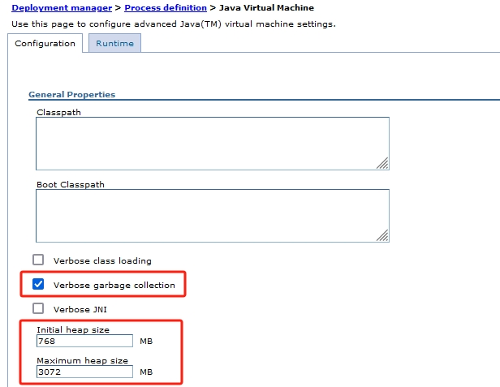
Node Agent
Similar with Deployment Manager, on WAS admin console, navigate to System administration - Node agents, select the node agent and follow the same steps above.
Appliation Server
Similar with Deployment Manager, on WAS admin console, navigate to Servers - Server Types - WebSphere application servers, select the server and follow the same steps above.
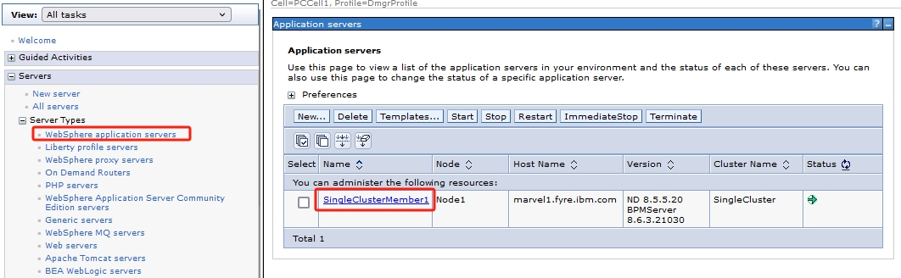
Recommendations
- Use PMI or Health Center described in Health Check Tools to monitor the heaps.
- Check the monitoring results, increase the heap size accordingly.
- Verbose GC should always be enabled. It has little performance impact and is very useful to analyse JVM Garbage Collection.
- For more information about the heap size tuning, please refer to section 4.12 of IBM Business Process Manager V8.5 Performance Tuning and Best Practices.
2.3 Thread Pool
If a thread pool is used up, new thread will be blocked and impact performance. For BAW we need check the following thread pools.
- Default: default thread pool
- ORB.thread.pool: EJB thread pool, usually used by EJB invocations (e.g. BAW Advanced EBJ API)
- WebContainer: used by web applications and Rest APIs
Only the thread pools for Application Cluster need to be checked.
On WAS Admin Console, navigate to Servers - Server Types - WebSphere application servers, click the application server on the right side.
Scroll down to the bottom of the page, under Additional Properties click Thread Pools.
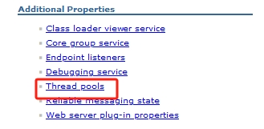
Click one thread pool, check the Minimum Size and Maximum Size.
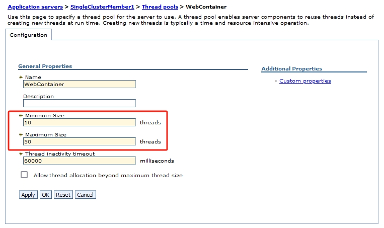
2.4 Activation Specification
For BAW we need check the following activation specifications.
- BPEInternalActivationSpec: for BAW Advanced BPEL engine
- DataDefLoaderActivationSpec: for BAW Standard PDW
- PostLoadCalculationActivationSpec
- EventMgrControlActivationSpec: for BAW Standard event manager
- EventMgrMessageActivationSpec: for BAW Standard event manager
On WAS Admin Console, navigate to Resources - JMS - Activation specification, select an AS on the right side.
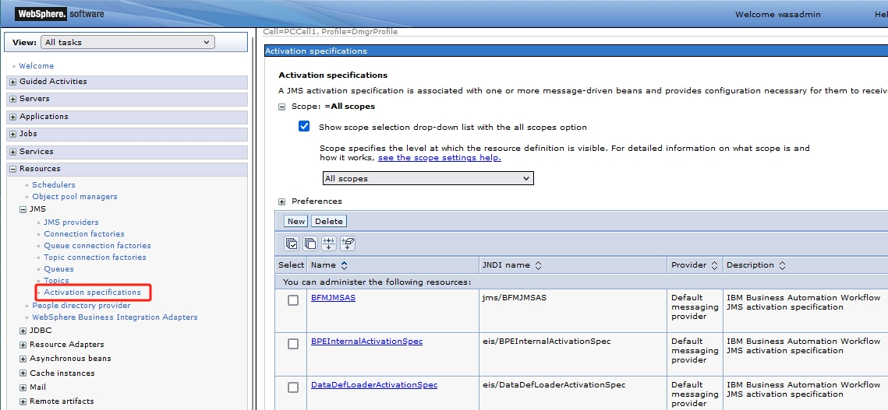
Under Additional check Maximum batch size and Maximum concurrent MDB invocations per endpoint.
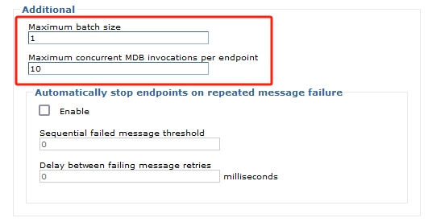
2.5 Transaction Service
On WAS Admin Console, navigate to Servers - Server Types - WebSphere application servers, click the application server on the right side.
Under Container Settings, expand Container Services and click Transaction service.
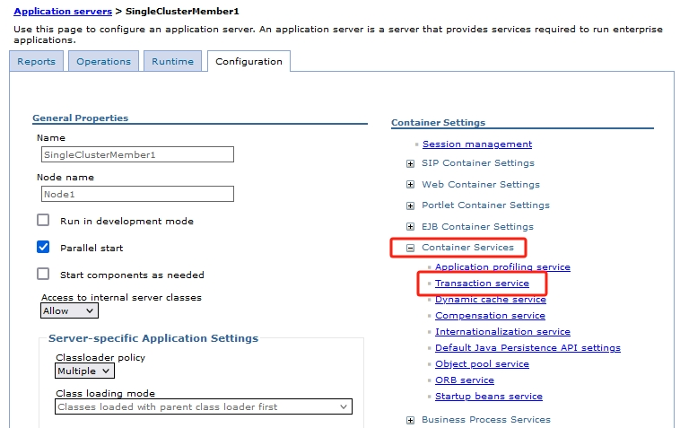
Check the transaction timeouts.
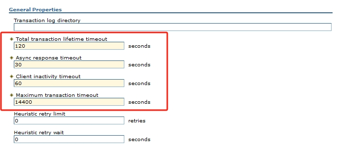
2.6 Work Manager
Navigation activities for both the BPEL Engine and the BPMN Engine are typically configured to use a Work Manager. We need check these WMs.
- BPENavigationWorkManager: BAW Advacned BPEL engine
- DefaultWorkManager: BAW Advacned BPEL engine
- bpm-em-workmanager: BAW Standard BPMN engine
On WAS Admin Console, navigate to Resources - Asynchronous beans - Work managers. Select one WM.
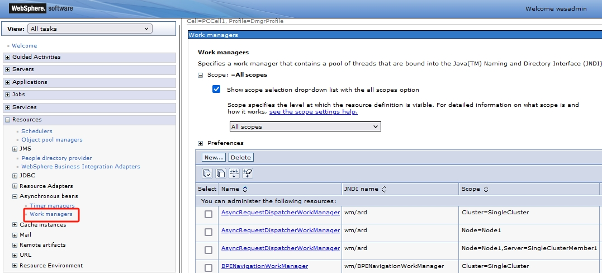
Check Work request queue size, Minimum number of threads and Maximum number of threads.
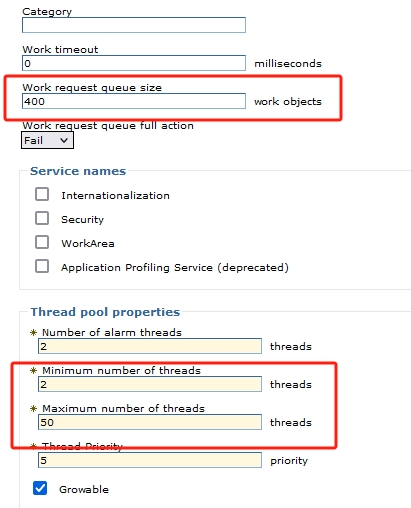
2.7 Review BAW Specific configuration
Some BAW configuration settings are saved in a set of XML files. Customer may overwrite the default value. We need check those settings.
This section is applicable for BAW Standard only.
For more information please refer to The 100Custom.xml file and configuration.
2.7.1 BAW Configuration File
All the currently effective configuration settings are stored in a file called TeamWorksConfiguration.running.xml once the BAW server is started. Find it in this folder $BAW_HOME/profiles/<Node Profile>/config/cells/<Cell name>/nodes/<node name>/servers/<server name>/process-<center/server> or search it under $BAW_HOME/profiles. For example,
/opt/ibm/bpm/profiles/Node1Profile/config/cells/PCCell1/nodes/Node1/servers/SingleClusterMember1/process-center/TeamWorksConfiguration.running.xml
Please note the one in folder process-center or process-server is what we need. The one in performance-data-warehouse is for PDW.
2.7.2 Cache Settings
In BAW there are numerous cache and cache-related settings. Find the following configurations in TeamWorksConfiguration.running.xml.
- default-unversioned-po-cache-size
- default-versioned-po-cache-size
- branch-context-max-cache-size
- bpm-repo-max-cached-snapshots
- classloader-cache-size
- classloader-resource-map-size
- cached-scope-size
- service-result-cache-size
(other caches may also impact system performance. To be improved...)
2.7.3 Cache Statistics
Login to Workflow Process Admin using BAW administrator, navigate to Monitoring - Instrumentation. Find the cache statistics.
-
Cache-Generic Cache, findHitsandMisses. 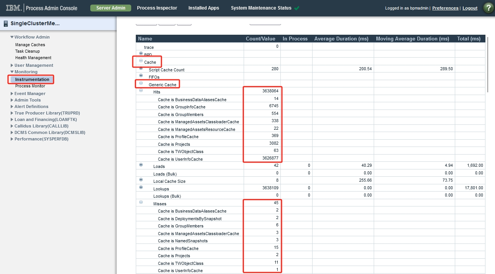 -
PO Factory, checkCache HitsandCache Misses. 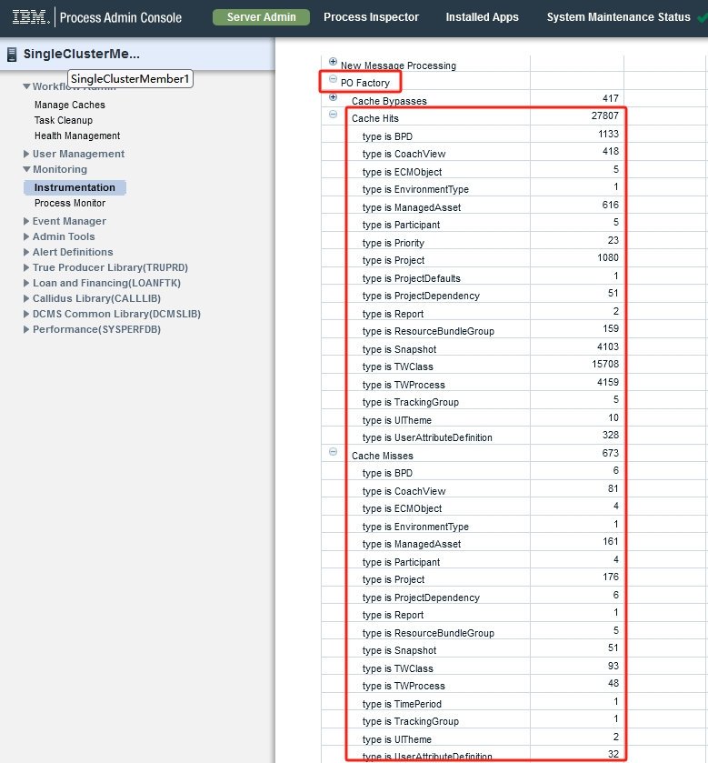 -
Repository, checkBranch context cache hitsandBranch context cache misses. 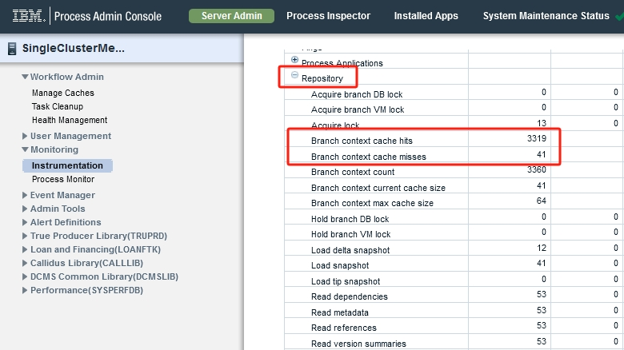
2.7.4 Performance Data Warehouse
BAW provides ways to collect and consume process performance information. Check <performance-server-communication> in TeamWorksConfiguration.running.xml.
2.7.5 Event Manager Queues
In TeamWorksConfiguration.running.xml check the following sections.
<event-manager>
<scheduler>
<sync-queue-capacity>
<async-queue-capacity>
<bpd-queue-capacity>
...
</scheduler>
</event-manager>
2.7.6 Miscellaneous
The following properties will also impact performance. Check them.
<web-messaging-push>
<send-external-email>
Recommendations
- Cache hit ratio usually should > 90%. If it is lower than 50%, there may be a problem.
- Refer to the following documents for Cache
- Cache tuning: section 4.4.7 of IBM BPM 8.5 Performance Tuning Redbook
- Cache and cache-related settings
- Using process instrumentation data for cache tuning
- Business data alias cache configuration
- PDW should be disabled if customer is not using it, to improve performance. Refer to Tracking IBM Business Automation Workflow performance data and Disabling tracking data generation for Business Process Manager (BPM) or Business Automation Workflow (BAW).
- Refer to the following documents for Event Manager
- Understanding and Tuning the Event Manager
- Refer to section 4.3 of IBM BPM 8.5 Performance Tuning Redbook for Process Portal tuning.